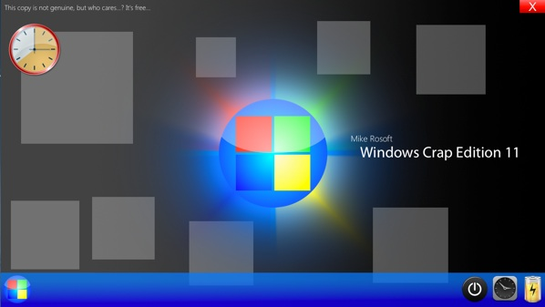
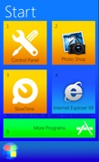
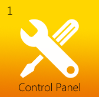
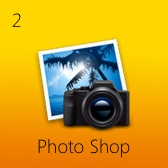
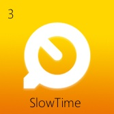
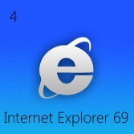
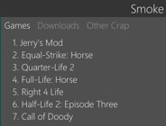
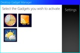

Spoof OS: Windows Crap Edition 11
The world's most crappy operating system, finely tuned.
Spoof OS: Windows Crap Edition 11 is the twelfth installment of the Windows edition of Spoof OS. It is packed with
over 6 new features.

|
All-New Start Menu
Win CE 11 features a new design for the Start menu. Apps are now easier to see, and easier to launch. Don't expect it to work too well though. |
 |
|
New Control Panel
Win CE 11 features a new Control Panel that is like nothing you've ever seen before. Literally, we mean that. It truly is amazing, revolutionary, stunning, awesome, and some other adjectives. |
 |
|
Photo Shop
Photo Shop is a new application that let's users by photographs. These photos range from everything. HDRs, nature, etc. etc. etc. etc.... so on and so forth. |
 |
|
SlowTime
SlowTime is a revolutionary media playback application. It can play video at a stunning 5 FPS. Results may vary. It's usually around 0 FPS. |
 |
|
Internet Explorer 69
Internet Explorer 69 includes a lot of changes. It is .03% faster, and it includes a new iCensor plug-in to keep your kids safe from that weird stuff on the Internet. |
 |
|
Smoke
The Smoke game client is built into Win CE 11. Here you can play all of your favorite games like Jerry's Mod, Call of Doody, and Half-Life 2: Episode Three... pfff, sorry, couldn't keep a straight face on that last one. |
 |
|
Desktop Gadgets
Win CE 11 comes loaded with 3 desktop gadgets that provide useful information on your soon-to-be-cluttered desktop |
 |